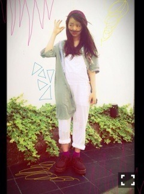

| 2013/07 08 Mon | 456回目*marika |
あるお店で泳いでる金魚。
近づいたら水から顔を出して
口をぱくぱくしながら
こっちまで泳いでくるの。
暑い日が続いてますね。
今日は雨も雷もすごかったー
空が騒がしいよー

化粧下手なのまいやんにバレた

眉毛かくの失敗してその状態で
メイクさんにチェックしてもらった話
をメイクさんに聞いたんだって笑
3本眉毛
 枝毛眉毛
枝毛眉毛
枝毛眉毛
まいやんに教えてもらう！うん
**********
 いっぱい会いに行ったら、
いっぱい会いに行ったら、
まりっかと仲良くなれますか？^ ^
 仲良くなりたい！
仲良くなりたい！
いっぱいお話したいよー

ムーミンのキャラクターで
誰が一番好き？
ニョロニョロ
他のﾒﾝﾊﾞｰは、生ｸﾘｰﾑ嬉しかった
って言ってますが
まりっかはどうでした？
嬉しかったですか－？
まりっかはどうでした？
嬉しかったですか－？
あのねー後にみんなと合流してから
ハイテンションになって楽しかった笑
お誕生日サプライズとか
してもらったことありますかー？
あるよー♪嬉しいよねー♪
写真の苔に名前って付けてるの？
右から
ニョキ子ニョキ男ニョキ美だよ。
ニョキ子とニョキ男に芽がでたよ！
声だけの演技に興味ある？
あるなら、どんな人物、
キャラクター演じてみたい？
すっごい興味あります。
乃木坂浪漫の朗読も
個人pvのナレーションも楽しかったし
いつか声優にも挑戦したい！
どんなキャラクターが
合ってると思いますか
 ？
？
？
プリンシパルとテスト
どっちが大変だった？
なんじゃーこの質問笑
大変でも楽しいか楽しくないかで
言ったらプリンシパルのが
断然楽しいよー

他の星から
曲調も歌詞も今までの
乃木坂にない感じですごい好き！！！
良かったらまりかの歌ってるパート
教えてーなー
良かったらまりかの歌ってるパート
教えてーなー
♪飯田橋の〜
♪(通り過ぎる)
♪誰もが同じ〜
♪ああそれより〜
♪変化は嫌い〜
♪サビ(初対面)
どっちかと言うと、
全握と個握どっちが好き？
全握はミニライブがあるからすき♪
個握も楽しい♪
みなさんとおしゃべりするの
楽しいです。
だからどっちもすきなの

**********

シャツ On y vua
レースサロペット Auntie Roza
靴 usedマーチン
このサロペット、見にくいけど
ぜんぶレースなんだよー
メンバーから好評なの
靴は最近買ったー厚底でかわいい。
握手会でねー
女の子に私服載せてって
たくさん言われました。
嬉しいよね
 でゅふふふ
でゅふふふ
でゅふふふ
......
明日は東京ドームで
「東北楽天ゴールデンイーグルス vs 北海道日本ハムファイターズ」戦
ガールズルールを披露します！
元気いっぱい踊るぞー
まりか
コメント(296)
2013/07/08 23:06